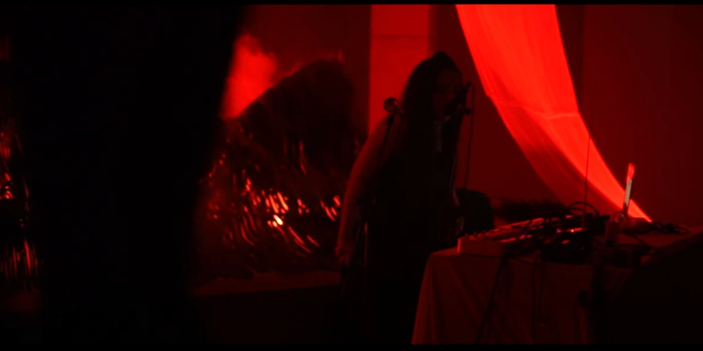

The project Hybrid Hope explores the relationship between shamanism and technology. It serves as a space where a collective of creators from various parts of Asia come together to learn and exchange ideas. Through extensive discussions, the project practices process-oriented art, including field research, interviews, and workshops. The aim is to reflect on the fading sense of community and the fragmented memories stemming from historical tragedies in the diverse cultural spheres of Southeast and East Asia. This website shares the dialogue process and lays the foundation for further gatherings. 2024 Participants:
Bob Edrian, Eugene Hannah Park, Gesyada Siregar, Gyeol Ko, Jeffi Manzani, Sojin Kwak
This website is supported by the 2024 Asean-Korea Partnership Project for Innovative Culture by KOFICE
#1
sojin kwak
#2
gyeol ko
#3
gesyada siregar
#4
bob edrian
#5
eugene hannah park
#6
jeffi manzani
jeffi manzani
notoracl3
This work seems to be a projection of individual perceptions in experiencing screens and isolating digital objects. notoracl3 also triggers the imagination of the dissolution of time and space in the game world. Games on screens, however, always have the potential to make people think that their bodies have moved into the reality of the screen. Therefore, changes in behavior and ways of thinking cannot be stopped when entering the digital era in the growth and development of internet culture. notoracl3 is an intermediate space that bridges questions related to what changes in people's daily lives when interacting with the virtual world.
Sound credit: Liquid Entertainment
bob edrian
Shamanic Practice in the Arts:
A Study of Lintang Radittya and Monica Hapsari Artistic Trajectory
By Bob Edrian
Comprising 38 provinces spread across more than 17,000 islands, Indonesia is an archipelago rich in diverse traditions and local cultures. Among these are traditions and cultures closely tied to shamanism, mysticism, occultism, and esoteric knowledge. In exploring the diversity of shamanistic culture in the Nusantara (read: Indonesia), artistic practices often intersect with or intentionally incorporate various beliefs, rituals, and local traditions into many artistic expressions, introducing new ways of perceiving Nusantara culture. This intersection serves as the focal point for delving into the relationship between shamanism and technology within the framework of art, particularly in media art.
In a 2018 exhibition titled Soemardja Sound Art Project held at Galeri Soemardja, Institut Teknologi Bandung, Lintang Radittya presented a work entitled PROPHECY-PREDICTION: PRO-DICTION, inspired by the prophecies of Jayabaya, a 12th-century king of the Kediri Kingdom in Central Java. Through this piece, Lintang utilized sound elements, particularly noise, to highlight prophecies that would come true based on audience interaction. Jayabaya is renowned as a king who prophesied an era of calamities that would eventually lead to the golden age of the Nusantara, heralded by the arrival of the Ratu Adil or the "Hidden Knight" (Satria Piningit).
During this period of his artistic career, Lintang was developing his concept of Java-Futurism, which seeks to examine the past through sound experimentation and activism to uncover visions of the future. Lintang Radittya is a multidisciplinary artist and instrument builder based in Yogyakarta. His works often explore the relationship between metaphysics, noise/sound, and speculative ideas about the future.
A year later, Lintang was unexpectedly reached out to by an artist named Monica Hapsari. Monica, who was involved in the second edition of the international media art festival Instrumenta #2: Machine/Magic, planned to be held at the National Gallery of Indonesia, sought Lintang's assistance in creating an installation based on cymatics—a study of wave and frequency phenomena that can influence the mental, emotional, and spiritual states of human beings. This sudden and swift collaboration between Monica Hapsari and Lintang Radittya resulted in a work titled Kechari, which was exhibited in 2019.


The Kechari installation is a work that not only explores sound through specific frequencies but also incorporates chants recited or sung by Monica. Monica Hapsari is an artist based in Tangerang, Banten. Her artistic practice and research focus on various spiritual traditions and local wisdom of the Nusantara, presented through visual and sound installation formats. In a performance held in 2021 at NuArt Sculpture Park in Bandung, West Java, Monica presented a series of compositions that combined vocal breathing techniques with sounds based on local traditional and digital instrumentation. The performance emphasized the concept of purification and offering for those who had passed away (the work was showcased during the early stages of the COVID-19 pandemic) by merging spiritual and technological ideas.
Monica Hapsari Performance in 2021
Monica revisited her artistic practice in performance format, emphasizing offerings for departed souls and ancestors, during the 2023 artina.Sarinah: Matrajiva event at the Sarinah Thamrin Building, Central Jakarta. This time, the performance accompanied her installation piece titled Pitarah (Ancestors). Through this work, Monica explored the historical legacy of the Megalithic period at the Watu Kelir site in the Dieng Temple Complex and Batu Goong in Cigadung Village, Pandeglang, Banten.
In the historical narrative of the Megalithic era, humans were said to have mastered working with large stones and hard soil. This period left cultural traces in the form of the placement of large stones in circular formations, known as the temu gelang or concentric stone circles. Monica studied how sound traditions and rituals conducted within these megalithic formations were believed to function as a metaphysical bridge connecting the living with ancestors or loved ones who had passed away. Monica dedicated this work specifically to her late mother, Sapartinah Abdurrachman.
In the same exhibition, Lintang Radittya presented his work titled Theorama Pedophony: Meru Swara. This piece featured two sound installations utilizing soil samples from two mountains in Central Java, particularly around Yogyakarta: Mount Merapi and Nglanggeran (Semilir). These two mountains embody numerous narratives about the coexistence of humanity and nature. This connection is also linked to the soil as a material, which, in Islamic belief, is considered the primary element in the creation of humans. Another layer of storytelling within this installation is the cosmological axis involving Mount Merapi, the Yogyakarta Palace (Keraton Yogyakarta), and the Southern Sea (Laut Selatan), illustrating the interconnectedness of these sacred sites.
The concept of cosmological axis shaping the spiritual values of Yogyakarta’s society became a further area of exploration in the Hybrid Hope research initiative, which invited Lintang Radittya as one of the speakers for an online workshop. This workshop explored how natural architecture and objects can evoke ideas related to spirituality and belief in metaphysical forces. Drawing from his work Theorama Pedophony: Meru Swara, Lintang discussed how specific sites and geographical locations have the potential to inspire practices of shamanism, which eventually grow into traditions and rituals.
Intersecting with Lintang Radittya’s workshop, which was rooted in his artistic trajectory, Hybrid Hope also invited Monica Hapsari to host a workshop located at Namarina Dance Academy in South Jakarta. Monica’s workshop focused on the involvement of the body in generating spiritual imagery and energy. In her session, she introduced a breathing method designed to create energy capable of activating physical objects. This activity aligned with her artwork Pitarah (Leluhur), which incorporates meditation as a form of bodily practice and an effort to communicate with ancestors.
In both Monica Hapsari and Lintang Radittya workshops, they explored historical legacies, rituals, and traditions that have been preserved and revitalized by artists and creative practitioners. This demonstrates how artistic practices evolve in tandem with the development of tradition and technology. Media art serves as a bridge to reexamine how local traditions and beliefs can collaborate with technological advancements.
Prior to these workshops, Lintang and Monica collaborated on an artwork for the Media Art Community Festival (Festival Komunitas Seni Media) held at Fort Rotterdam, Makassar, South Sulawesi. Both artists participated in a residency in Sinrijala village to explore the myth of the white crocodile named Sinrijala. This research and residency resulted in an installation and performance created in collaboration with the residents of Manggarabombang at the Tallo River estuary, titled TENGARA. Together with the local community, Lintang Radittya and Monica Hapsari delved into the myth of the white crocodile in relation to environmental imbalances. This myth is regarded as a sign or Early Warning System (EWS) developed in the past to ensure the survival of the communities living along the Tallo River.
The concepts of shamanism and technology are reflected to some extent in the artistic practices of Lintang Radittya and Monica Hapsari. Both share an interest in exploring history and myths within the framework of contemporary technological advancements. History, myths, folklore, as well as ideas of occultism, shamanism, and mystical objects need to be understood further by examining their geographical context and societal conditions.
Lintang and Monica approach their artistic practices not merely by extracting the attractive appeal of a myth or historical narrative but by comprehending these myths and histories as learning points for understanding the context of humanity and spirituality in the present day.